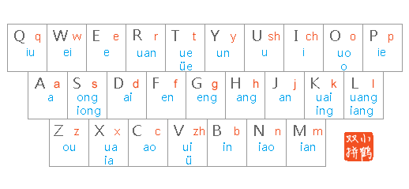
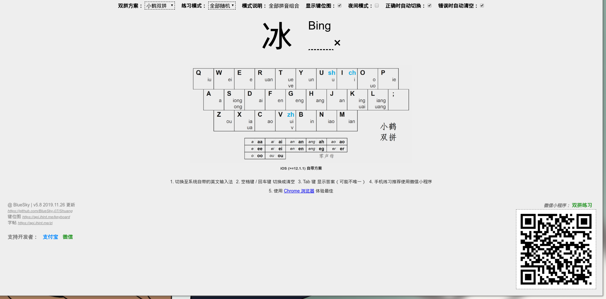

小鹤双拼的使用
Posted

双拼是什么
双拼是汉语拼音输入法的一种编码方案。相对于全拼而言，使用双拼输入汉字时只需输入一个代表声母的字母，一个代表韵母的字母，就可以打出任意一个中文单字了。
目前Windows、Android、macOS、iOS平台上都有输入法支持双拼，包括iOS系统自带输入法、QQ输入法、百度输入法、搜狗输入法、谷歌输入法和微软必应输入法等。*

怎样学习
依吾之拙见，步骤如下：
- 先仔细过一遍键码图，无论是什么双拼
- 在 双音练习 这个网站练习20几分钟即可初步入门
- 要在日常生活中使用，初期不要嫌弃输入的速度太慢，应当循序渐进，慢慢进步

后记
太阳落下时我们才意识到阳光的温暖，当一切都变得渺小时候，我想这就是所谓的主流吧！